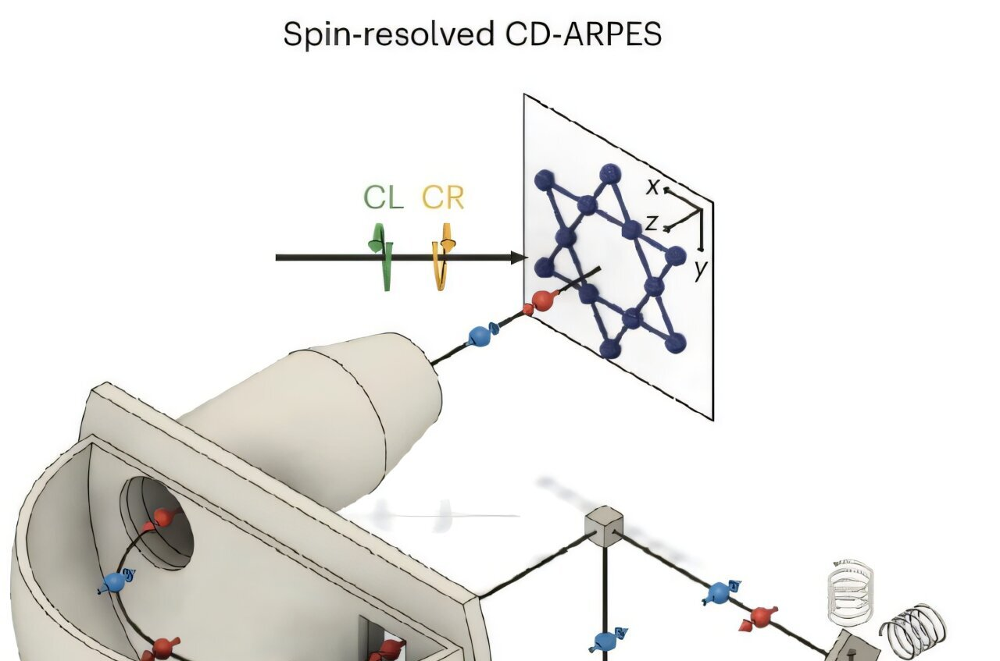

MIT Researchers Measure Quantum Geometry of Electrons in Solid Materials for First Time
Physicists at MIT have successfully measured the quantum geometry of electrons in solids, marking a pivotal moment in quantum research. This was achieved using an advanced adaptation of angle-resolved photoemission spectroscopy (ARPES), enabling direct observation of quantum properties that were previously theoretical. The study, featured in Nature Physics, focused on a material known as kagome metal, opening doors for deeper understanding and practical manipulation of quantum materials. The research highlights collaboration between experimentalists and theorists, with significant contributions made during the pandemic.e
Key Points
- MIT team measures quantum geometry in solid materials
- Groundbreaking ARPES technique used to study quantum properties
- New insights into material properties could advance quantum tech